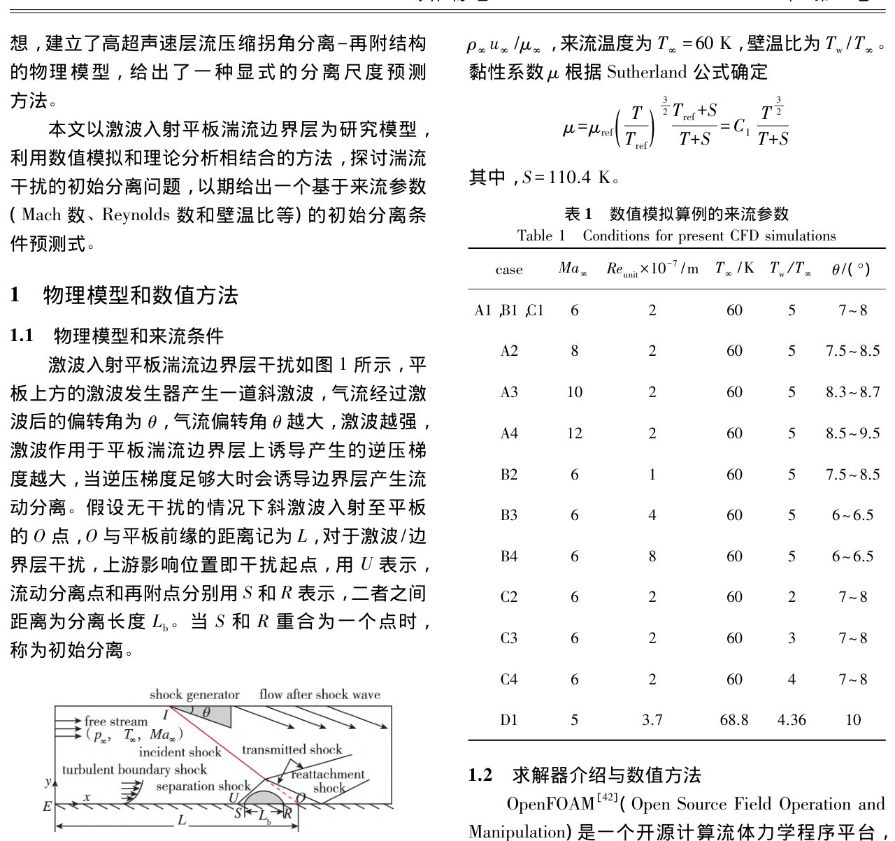
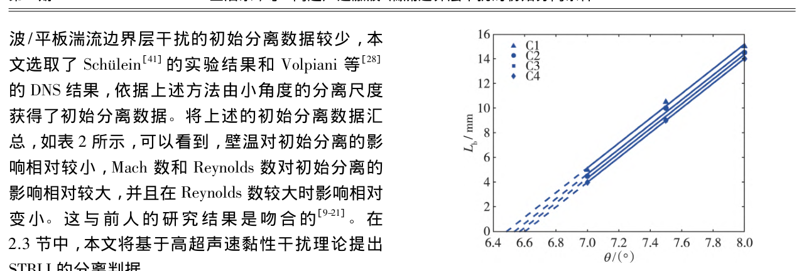
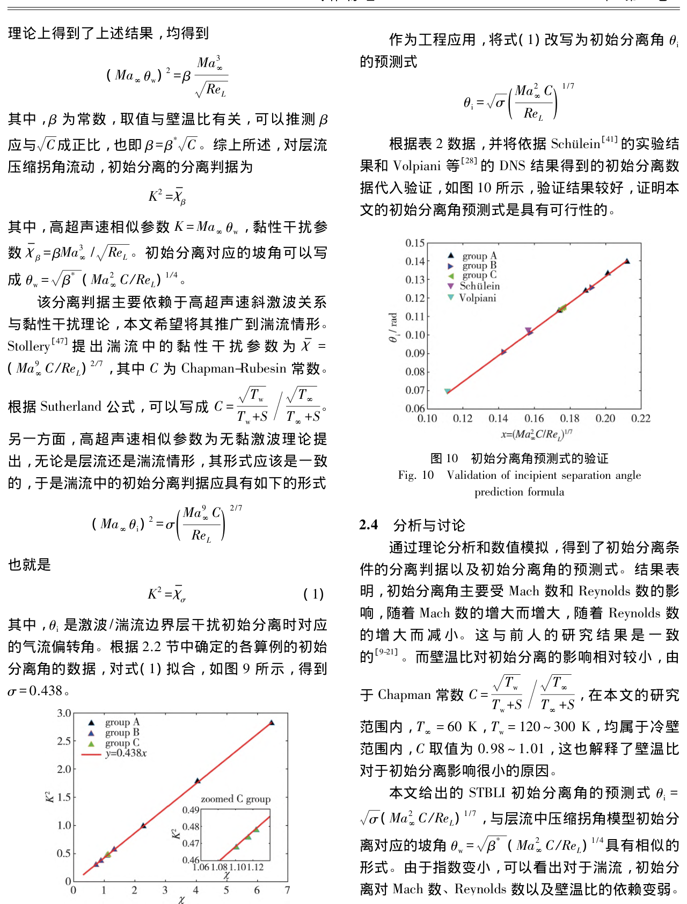
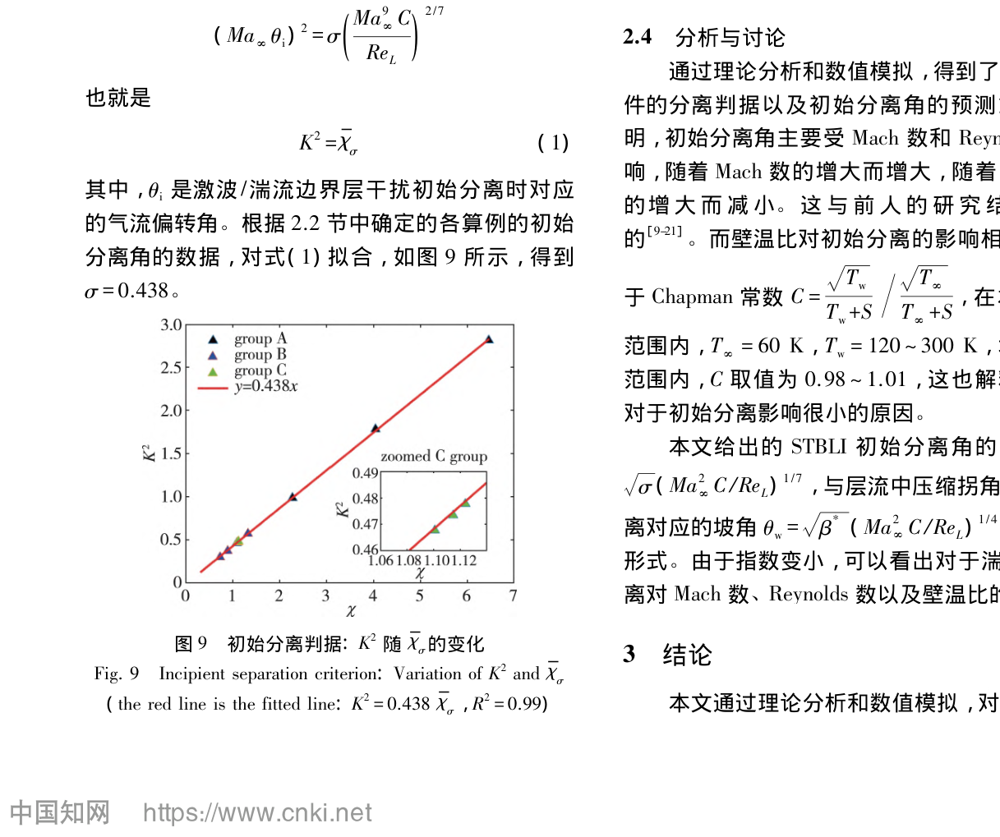

01中文摘要
针对高超声速斜激波入射平板湍流边界层的初始分离问题，结合理论分析与数值模拟，提出以高超声速相似参数和湍流黏性干扰参数为自变量的显式预测式。计算覆盖不同马赫数、雷诺数和壁温比，结果表明该判据在较宽参数范围内适用；马赫数和雷诺数对初始分离影响显著，冷壁范围内壁温比影响较小。研究为预测激波诱导分离及后续分离尺度提供依据。
原始摘要（英文/原文）
激波/湍流边界层干扰(shock/turbulent boundary layer interaction, STBLI)是航空航天领域中广泛存在的一种复杂流动现象，对飞行器的气动性能具有显著影响。通过理论分析和数值模拟，对高超声速斜激波入射平板湍流边界层的初始分离条件进行了研究，提出了一个基于高超声速相似参数和湍流黏性干扰参数的显式预测式，用于预测平板STBLI的初始分离。本研究考虑了Mach数、 Reynolds数和壁温比等参数，进行了一系列算例的数值模拟，结果表明，本文提出的初始分离判据在相当大的参数范围内均有良好的适用性。进一步分析发现，Mach数和Reynolds数对初始分离的影响较大，而冷壁范围内的壁温比对初始分离的影响较小。这些结果和分析有助于理解高超声速流动中的激波诱导分离现象和后续预测激波/湍流边界层干扰的分离尺度。
02阅读说明
期刊论文（《气体物理》2025, 10(3):18–26），理论分析+CFD。材料含9页PDF文本与12个抓图文件；抓图清单把表1、表2误标为“图1/图2”，本文按原表题使用。公式OCR有个别分式与下标乱码，已用原PDF第6–7页（印刷页23–24）核对主要判据；式(1)与图9题注中σ的位置仍有歧义，已在open_questions注明；C的分式排布在扫描件中也有歧义，已在key_parameters与limits注明。 文章类型：期刊
03一句话核心与三句话摘要
用高超声速相似参数K与湍流黏性干扰参数χσ建立平板STBLI初始分离显式判据K²=χσ。
- 论文以斜激波入射平板湍流边界层为模型，用RANS计算一系列Ma∞、单位Re和壁温比工况，并按Lb–θ线性插值确定初始分离角。 原文明确
- 作者把层流压缩拐角的Needham/Holden判据推广到湍流，采用Stollery的χ=(Ma∞^9 C/ReL)^{2/7}，提出K²=χσ并用CFD数据拟合σ=0.438（R²=0.99）。 AI概括
- 计算显示θi随Ma∞增大、随Re增大而减小，冷壁范围内壁温比影响很弱；作者用Schülein实验和Volpiani DNS做了外部验证。 原文明确
04核心内容清单
| 要点 | 类型 | 重要性 | 原文依据 | 属性 |
|---|---|---|---|---|
| 已有STBLI初始分离研究多基于压缩拐角，且以定性规律为主，缺少以来流参数表达的预测式。 | 研究缺口 | B | 印刷页19，引言 | 原文明确 |
| 采用斜激波入射平板湍流边界层模型，激波入射点固定在前缘下游L=0.35 m，θ越大激波越强、逆压梯度越大。 | 物理模型 | A | 印刷页20，1.1节，图1 | 原文明确 |
| 初始分离定义为壁面剪切应力恰有一点降为零；湍流情形取时均值，S与R重合。 | 定义 | A | 印刷页19，引言 | 原文明确 |
| 数值方案为rhoCentralFoam/KNP/VanLeer/RANS k-ω SST，壁面y+<1，Sutherland黏性S=110.4 K。 | 数值方法 | A | 印刷页20–21，1.2节 | 原文明确 |
| 三套网格200×200、380×300、460×400及不同CFL的壁面压力被用于网格/时间步验证；与Schülein实验的S/R位置吻合（334/345 mm对332/344 mm）。 | 验证 | A | 印刷页21–22，1.3节，图3–图5 | 原文明确 |
| 初始分离角由Lb–θ曲线在Lb=0附近线性插值确定；A4组7.8°–24°数据得7.94°，7.8°时cf分布无分离。 | 方法/结果 | A | 印刷页22，2.1节，图6–图7 | 原文明确 |
| Ma∞增大使θi增大：Ma6→12（A组）θi由6.48°→8.00°。 | 定量规律 | A | 印刷页23，表2 | 原文明确 |
| 单位Re增大使θi减小：1×10^7→8×10^7（B组）θi由6.48°→5.28°，高Re时影响变弱。 | 定量规律 | A | 印刷页23，表2 | 原文明确 |
| 冷壁范围内壁温比影响很小：Tw/T∞=5→2（C组）θi仅6.48°→6.60°；T∞=60 K、Tw=120–300 K时C=0.98–1.01。 | 定量规律 | A | 印刷页23–24，表2、2.4节 | 原文明确 |
| 层流判据为(Ma∞θw)²=β Ma∞³/√ReL，β=β*√C，即K²=χβ；Needham与Holden分别给出系数2.07与1.95。 | 理论 | A | 印刷页23–24，2.3节 | 原文明确 |
| 湍流采用Stollery的χ=(Ma∞^9 C/ReL)^{2/7}，保持K=Ma∞θ形式，得到(Ma∞θi)²=σ(Ma∞^9 C/ReL)^{2/7}，即K²=χσ（式(1)）。 | 理论/判据 | A | 印刷页24，2.3节，式(1) | 原文明确 |
| 对CFD数据拟合得σ=0.438、R²=0.99；反解预测式θi=√σ(Ma∞²C/ReL)^{1/7}，并用Schülein实验与Volpiani DNS验证。 | 结果/验证 | A | 印刷页24，式(1)、图9–图10 | 原文明确 |
05引言：研究问题与领域缺口
研究问题：高超声速STBLI初始分离缺少基于来流参数的显式预测式。作者回顾Kuehn、Holden、Settles等关于Ma、Re、壁温影响的实验，指出已有工作多为压缩拐角、以定性规律为主；平板入射构型与压缩拐角具有等价性。目标是建立以Ma∞、ReL、Tw/T∞为输入的θi预测式（印刷页19）。假设：初始分离可由壁面剪切应力恰为零（时均意义）定义，且高超声速相似参数与黏性干扰参数可跨层流/湍流推广（印刷页19、23–24）。
06流动条件与几何构型
| 项目 | 数值/描述 | 依据 | 备注 |
|---|---|---|---|
| 公共设置 | 激波入射点距平板前缘L=0.35 m；Sutherland常数S=110.4 K；各工况来流参数见表1 | 印刷页20，1.1节 | 激波发生器位置调整以保持入射点O不变 |
| A1 | Ma∞=6；Reunit=2×10^7 /m；T∞=60 K；Tw/T∞=5；θ=7°–8° | 表1，印刷页19–20（PDF第3页） | 表1中与B1、C1同列一行 |
| B1 | Ma∞=6；Reunit=2×10^7 /m；T∞=60 K；Tw/T∞=5；θ=7°–8° | 表1，印刷页19–20（PDF第3页） | 与A1、C1同列一行 |
| C1 | Ma∞=6；Reunit=2×10^7 /m；T∞=60 K；Tw/T∞=5；θ=7°–8° | 表1，印刷页19–20（PDF第3页） | 与A1、B1同列一行 |
| A2 | Ma∞=8；Reunit=2×10^7 /m；T∞=60 K；Tw/T∞=5；θ=7.5°–8.5° | 表1，印刷页19–20（PDF第3页） | |
| A3 | Ma∞=10；Reunit=2×10^7 /m；T∞=60 K；Tw/T∞=5；θ=8.3°–8.7° | 表1，印刷页19–20（PDF第3页） | |
| A4 | Ma∞=12；Reunit=2×10^7 /m；T∞=60 K；Tw/T∞=5；θ=8.5°–9.5° | 表1，印刷页19–20（PDF第3页） | |
| B2 | Ma∞=6；Reunit=1×10^7 /m；T∞=60 K；Tw/T∞=5；θ=7.5°–8.5° | 表1，印刷页19–20（PDF第3页） | |
| B3 | Ma∞=6；Reunit=4×10^7 /m；T∞=60 K；Tw/T∞=5；θ=6°–6.5° | 表1，印刷页19–20（PDF第3页） | |
| B4 | Ma∞=6；Reunit=8×10^7 /m；T∞=60 K；Tw/T∞=5；θ=6°–6.5° | 表1，印刷页19–20（PDF第3页） | |
| C2 | Ma∞=6；Reunit=2×10^7 /m；T∞=60 K；Tw/T∞=2；θ=7°–8° | 表1，印刷页19–20（PDF第3页） | |
| C3 | Ma∞=6；Reunit=2×10^7 /m；T∞=60 K；Tw/T∞=3；θ=7°–8° | 表1，印刷页19–20（PDF第3页） | |
| C4 | Ma∞=6；Reunit=2×10^7 /m；T∞=60 K；Tw/T∞=4；θ=7°–8° | 表1，印刷页19–20（PDF第3页） | |
| D1 | Ma∞=5；Reunit=3.7×10^7 /m；T∞=68.8 K；Tw/T∞=4.36；θ=10° | 表1，印刷页19–20（PDF第3页） | 与Schülein实验条件一致 |
07核心现象与关键参数
| 参数 | 定义 | 数值 | 关系/说明 | 依据 |
|---|---|---|---|---|
| Ma∞ | 来流Mach数 | 6（A1、B、C组）；8/10/12（A2–A4）；5（D1） | 高超声速相似参数K=Ma∞θ | 表1，印刷页19–20 |
| Reunit | 单位长度Reynolds数ρ∞u∞/μ∞ | 1×10^7–8×10^7 /m | 以L为参考的ReL=Reunit·L | 印刷页20，1.1节；表1 |
| T∞ | 来流静温 | 60 K（A/B/C组）；68.8 K（D1） | 用于Sutherland黏性与C | 表1 |
| Tw/T∞ | 壁温比 | 2–5（A/B/C组）；4.36（D1） | 进入Chapman–Rubesin常数C | 表1 |
| θ | 斜激波后的气流偏转角，也用作拐角角度的类比量 | 6°–10°（各工况分列见表1） | θ越大，激波越强、逆压梯度越大 | 印刷页20，1.1节；表1 |
| L | 无干扰时斜激波入射点至平板前缘的距离 | 0.35 m | ReL的参考长度 | 印刷页20，1.1节 |
| K | 高超声速相似参数 | K=Ma∞θi（初始分离时） | K²=χσ（湍流判据） | 印刷页24，2.3节 |
| χσ | 湍流黏性干扰参数（按式(1)与上下文，具体是否含σ受限于材料无法完全确认） | σ(Ma∞^9 C/ReL)^{2/7} | K²=χσ；图9题注写作K²=0.438χσ | 印刷页24，式(1)、图9题注 |
| C | Chapman–Rubesin常数（分式排布受限于扫描件，无法完全确认） | 0.98–1.01（T∞=60 K、Tw=120–300 K） | 原文按Sutherland公式给出C，并称T∞=60 K、Tw=120–300 K时C=0.98–1.01 | 印刷页24，2.4节 |
| σ | 湍流初始分离判据的拟合常数 | 0.438（R²=0.99） | θi=√σ(Ma∞²C/ReL)^{1/7} | 印刷页24，图9 |
| θi | 初始分离角 | 5.28°–8.00°（本文工况，表2） | 由Lb–θ插值得到 | 表2，印刷页23 |
| S | Sutherland公式常数 | 110.4 K | μ=μref(T/Tref)^{3/2}(Tref+S)/(T+S) | 印刷页20，1.1节 |
08方法与数据
数值：二维斜激波入射平板湍流边界层，激波入射点距前缘L=0.35 m；OpenFOAM rhoCentralFoam，有限体积，KNP中心迎风通量，VanLeer限制器，RANS k-ω SST，y+<1；Sutherland黏性，S=110.4 K。网格200×200、380×300、460×400，并比较CFL。验证：与Schülein实验对比，实验分离/再附点S=334 mm、R=345 mm，计算S=332 mm、R=344 mm。初始分离角：每个工况取3个偏转角，计算Lb–θ，在Lb→0附近线性插值；A4用7.8°–24°数据得θi=7.94°，且7.8°时cf无分离。理论：汇总表2数据，拟合K²=χσ。
| 项目 | 内容 | 依据 | 备注 |
|---|---|---|---|
| 几何与来流 | 二维斜激波入射平板湍流边界层，入射点L=0.35 m；通过激波发生器位置保持入射点不变 | 印刷页20，1.1节，图1 | |
| 求解器 | OpenFOAM rhoCentralFoam，有限体积法离散N-S方程 | 印刷页20，1.2节 | |
| 通量格式 | Kurganov–Noelle–Petrova（KNP）中心迎风格式，VanLeer限制器 | 印刷页20，1.2节 | |
| 湍流模型 | Menter k-ω SST两方程RANS模型，壁面加密满足y+<1 | 印刷页21，1.2节 | |
| 黏性 | Sutherland公式，S=110.4 K | 印刷页20，1.1节 | |
| 网格与CFL | 200×200、380×300、460×400三套网格；比较不同CFL的壁面压力 | 印刷页21，1.3节，图3–图4 | |
| 实验验证 | 与Schülein高Mach数斜激波/湍流边界层实验对比；实验S=334 mm、R=345 mm，计算S=332 mm、R=344 mm | 印刷页21–22，1.3节，图5 | |
| 初始分离角提取 | 每个工况3个偏转角，计算Lb，按Lb–θ在Lb=0附近线性插值；A4用7.8°–24°数据 | 印刷页22，2.1节，图6–图8 | |
| 理论拟合 | 把表2数据代入K²=χσ拟合σ，并用Schülein实验与Volpiani DNS验证预测式 | 印刷页23–24，2.3节，图9–图10 |
09核心推导与公式
把层流压缩拐角的自由干扰/黏性干扰标度推广到湍流：高超声速相似参数K=Ma∞θ保持形式不变，湍流黏性干扰参数改用Stollery的χ=(Ma∞^9 C/ReL)^{2/7}，令K²=σχ并用CFD初始分离数据标定σ，再反解θi。
关键假设
- 二维斜激波入射平板湍流边界层，激波入射点固定L=0.35 m；初始分离由时均壁面剪切应力恰为零定义。
- 高超声速相似参数K=Ma∞θ在层流与湍流中形式一致。
- 湍流黏性干扰参数采用Stollery的χ=(Ma∞^9 C/ReL)^{2/7}。
- Chapman–Rubesin常数C=√(Tw/T∞)(T∞+S)/(Tw+S)，S=110.4 K。
- 初始分离阈值可写为K²=σχ，σ为待定常数，在本文工况范围内不随Ma∞、Re、Tw/T∞变化。
- 层流对照采用Needham/Holden的(Ma∞θw)²=β Ma∞³/√ReL，β=β*√C。
推导过程
以Ma∞与初始分离角θi定义K=Ma∞θi；θi为激波/湍流边界层干扰初始分离对应的气流偏转角（印刷页24）。
Needham等收集高超声速层流压缩拐角实验，拟合初始分离时(Ma∞θw)²与Ma∞³/√ReL成正比，系数2.07，C*由参考温度计算（印刷页23）。
Holden独立得到同形式关系，系数1.95，使用壁温Chapman–Rubesin常数Cw（印刷页23）。
将上述结果写成(Ma∞θw)²=β Ma∞³/√ReL，并推测β与√C成正比，即β=β*√C；由此定义K²=χβ，并反解出层流初始分离坡角θw（印刷页23–24）。
Stollery提出湍流中的黏性干扰参数为χ=(Ma∞^9 C/ReL)^{2/7}，其中C为Chapman–Rubesin常数（印刷页24）。
认为K由无黏激波理论给出、层流/湍流形式一致，于是把χβ换成χσ，写出(Ma∞θi)²=σ(Ma∞^9 C/ReL)^{2/7}，并记为K²=χσ，即式(1)（印刷页24）。
对表2各工况的θi与对应来流参数按式(1)拟合，得到σ=0.438，R²=0.99（图9）；图9题注给出的拟合线写作K²=0.438χσ（印刷页24）。
将式(1)两边开方并解出θi，得到以Ma∞、C、ReL为输入的显式预测式；因指数为1/7，湍流对参数的依赖弱于层流的1/4（印刷页24）。
按Sutherland公式把C写成壁温与来流温度的函数；本文T∞=60 K、Tw=120–300 K时原文给出C=0.98–1.01，故冷壁范围内壁温比对θi影响很小（印刷页24）。C的具体分式排布受限于扫描件，无法完全确认。
适用边界：推导依赖层流标度的直接推广、Stollery湍流χ形式与常数σ；σ仅由本文冷壁平板工况标定。式(1)中χσ是否已含σ、图9题注的K²=0.438χσ与正文K²=χσ如何统一，受限于材料无法完全确认。 C的具体分式排布在扫描件中也有歧义。
10结果：主要发现与关键证据
表2给出各工况θi：A1/B1/C1 6.48°，A2 7.19°，A3 7.65°，A4 8.00°；B2 7.32°，B3 5.80°，B4 5.28°；C2 6.53°，C3 6.57°，C4 6.60°；Schülein 5.93°，Volpiani等DNS 4.04°。随Ma∞由6增至12，θi由6.48°增至8.00°；随单位Re由1×10^7增至8×10^7，θi由6.48°降至5.28°；Tw/T∞由5降至2，θi仅由6.48°变至6.60°。拟合得σ=0.438、R²=0.99；预测式θi=√σ(Ma∞²C/ReL)^{1/7}。
| 发现 | 证据 | 证据类型 | 强度 | 位置 | 属性 |
|---|---|---|---|---|---|
| θi随Ma∞增大而增大。 | A组Ma6→12，θi由6.48°→8.00°（表2）；与Kuehn、Holden等实验趋势一致（印刷页19、23）。 | 参数趋势 | 强 | 表2，印刷页23 | 原文明确 |
| θi随单位Re增大而减小，且高Re时影响变弱。 | B组Reunit=1×10^7→8×10^7，θi由6.48°→5.28°；B3/B4的θi仅5.80°/5.28°。 | 参数趋势 | 强 | 表2，印刷页23 | 原文明确 |
| 冷壁范围内壁温比对θi影响很小。 | C组Tw/T∞=5→2，θi仅6.48°→6.60°；T∞=60 K、Tw=120–300 K时C=0.98–1.01。 | 参数趋势 | 强 | 表2，印刷页23–24 | 原文明确 |
| Lb–θ线性插值可稳定提取初始分离角。 | A4用7.8°–24°数据得θi=7.94°，且7.8°时cf分布无分离（图6–图7）；表2汇总11个算例。 | 方法 | 强 | 印刷页22，2.1节，图6–图7 | 原文明确 |
| K²与χσ近似线性，拟合σ=0.438、R²=0.99。 | 图9给出K²随χσ的变化及红色拟合线；正文明确σ=0.438（印刷页24）。 | 判据 | 强 | 印刷页24，图9 | 原文明确 |
| 预测式可复现本文CFD及外部实验/DNS数据。 | 图10把表2数据、Schülein实验（θi=5.93°）与Volpiani DNS（4.04°）代入θi=√σ(Ma∞²C/ReL)^{1/7}，验证结果较好。 | 验证 | 中 | 印刷页24，图10；表2 | 原文明确 |
| 湍流判据对Ma、Re、壁温的依赖弱于层流。 | 层流θw∝(Ma∞²C/ReL)^{1/4}，湍流θi∝(Ma∞²C/ReL)^{1/7}；指数由1/4降至1/7（印刷页24）。 | 理论比较 | 中 | 印刷页24，2.4节 | 原文明确 |
11机制解释与论证链
【原文明确】激波入射产生逆压梯度；θ越大激波越强，逆压梯度越大，直至边界层分离。作者用K=Ma∞θi表征激波强度，用χσ=(Ma∞^9 C/ReL)^{2/7}（含拟合常数σ）表征湍流边界层黏性抵抗分离的能力，初始分离对应二者平衡K²=χσ。【AI概括】这相当于把层流自由干扰/黏性干扰标度换成湍流的2/7指数：Ma、Re增大都提高χσ，但θi∝(Ma²C/ReL)^{1/7}，故θi随Ma增大、随Re减小；冷壁C≈1使壁温影响弱。【AI推断】σ=0.438可视为湍流STBLI的标定常数，其物理含义是分离阈值，但仍依赖具体来流/壁面条件。
12讨论：结论、贡献与局限
机制：K=Ma∞θ表征激波逆压梯度强度，χσ表征湍流边界层黏性抗分离能力，二者平衡给出初始分离。因湍流χ的指数为2/7、预测式θi的指数为1/7，湍流对Ma、Re、壁温的依赖弱于层流的1/4。冷壁下C=0.98–1.01，故壁温影响小。局限：仅平板、仅冷壁、Tw范围有限、RANS对强干扰区有局限；式(1)中σ与χσ的定义位置有歧义；初始分离由稀疏偏转角插值得到。
作者结论
平板STBLI初始分离可用K²=χσ描述，σ=0.438（R²=0.99）；预测式为θi=√σ(Ma∞²C/ReL)^{1/7}。θi随Ma∞增大、随Re增大而减小；冷壁范围壁温比影响小。判据经Schülein实验与Volpiani DNS验证，可用于后续分离尺度预测。
局限与未解决问题
仅二维平板、斜激波入射；壁温仅冷壁（Tw/T∞=2–5，T∞=60 K），未覆盖热壁；RANS k-ω SST对强干扰/再附区有局限；初始分离由3个偏转角插值，角度分辨率有限；σ=0.438基于本文工况拟合，外推需谨慎；式(1)与图9题注中σ/χσ的定义位置存在歧义，受限于材料无法完全确认。
13对高速流动与工程的意义
给出基于Ma∞、Re、Tw/T∞的平板STBLI初始分离显式判据，便于工程快速估算；把层流压缩拐角标度推广到湍流，揭示1/7指数使参数依赖减弱；为分离尺度预测和流动控制提供入口。
14核心图件




15可引用原文素材
| 原文短句 | 可支持的观点 | 位置 | 使用建议 |
|---|---|---|---|
| “初始分离并不是突然发生的，而是逐渐发生的” | 说明为何用Lb–θ外推而不是单点判定初始分离 | 印刷页22，2.1节 | 方法依据 |
| “壁温对初始分离的影响相对较小” | C组θi几乎不随Tw/T∞变化 | 印刷页23，2.2节 | 结果 |
| “Mach 数和Ｒeynolds 数对初始分离的影响相对较大” | A组与B组的系统性趋势 | 印刷页23，2.2节 | 结果 |
| “K²=χσ” | 湍流初始分离判据的核心表达式 | 印刷页24，式(1) | 判据 |
| “得到σ=0.438” | 判据的定量标定值 | 印刷页24，2.3节 | 结果 |
| “C取值为0.98～1.01” | 冷壁下Chapman–Rubesin常数近似为1，解释壁温影响弱 | 印刷页24，2.4节 | 机制 |
| “均属于冷壁范围内” | 限定判据的适用壁温范围 | 印刷页24，2.4节 | 局限 |
| “对于更大范围的壁温比对初始分离的影响还有待进一步研究” | 作者自述的未解决问题 | 印刷页25，结论 | 局限/展望 |
16最终核验
| 核验项 | 结论 |
|---|---|
| 仅基于全文 | 仅使用bundle文本、图注与抓图清单；未引入外部文献或数据。 |
| A 级要点有依据 | A级条目均对应表1、表2、图3–图10或式(1)的明确数值/文字；B级为跨段概括。 |
| 属性标注 | three_sentence、core_points、findings均带attr；机制段用【原文明确】【AI概括】【AI推断】标注。 |
| 覆盖范围 | 覆盖引言、物理模型、数值方法、验证、结果、理论判据、讨论与结论；未逐条复述参考文献。 |
| 无编造 | 页码、图号、表号、公式与数值均来自bundle；无法确认处写“受限于材料，无法完全确认”或列入open_questions。 |
需回原文确认
- 式(1)中的χσ是否已包含σ？图9题注写K²=0.438χσ，与正文K²=χσ的记号如何统一？
- 图9横坐标χσ的具体数值与按完整χ=(Ma∞^9 C/ReL)^{2/7}估算是否一致、是否另做了σ缩放，受限于材料无法确认。
- σ=0.438是否依赖具体壁温/来流范围，能否外推到热壁或其他气体？
- 初始分离角由3个偏转角插值，角度步长对θi不确定度的影响有多大？
- RANS k-ω SST在强干扰/再附区的偏差是否会影响θi的提取？
- 平板入射与压缩拐角的等价角度如何定量换算，判据能否直接用于压缩拐角？
- 高Re时B组θi变化变弱是物理饱和还是计算/提取误差？
17关联文献
依据标签、板块、构型与作者脉络自动关联，可据此追踪同一问题的前序与后续工作。
18引用格式
选择期刊风格后复制；出处保留原刊名。BibTeX 可直接用于 LaTeX。
引用格式
王浩东, 朱博闻 & 鲍麟 2025 高超声速激波/湍流边界层干扰的初始分离条件. 气体物理 10 (3), 18–26. https://doi.org/10.19527/j.cnki.2096-1642.1149
PDF上传 PDF 并更新本页
本页缺少全文、摘要或图件时，可在浏览器本地补入 PDF。解析完全在本机完成，不上传网络；完成后会更新本页的 PDF 打开链接、原摘要、IMRaD 机器抽取、关键句与含图页面。复杂的公式语义与中文深度解读仍以原文和既有精读记录为准。